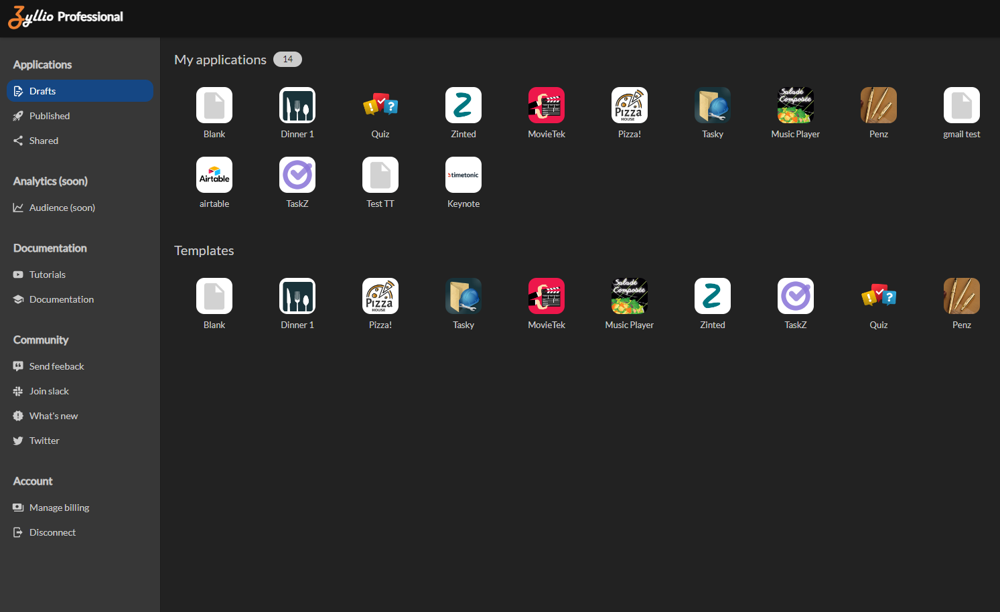

Dashboard
The dashboard serves as the central control point for managing your application creation space. This page provides you with quick access to essential features, making it easier to manage your applications and navigate through the different aspects of the platform.

Application Management
The "Applications" section allows you to create, delete, clone, and edit your applications.
Available actions:
- Create a new application
- Delete an existing application
- Clone an application to save time in development or to make a backup
- Edit the settings and features of each application
Application Templates
Discover application templates that can serve as a starting point for creating your own applications. These templates are business examples inspired by real needs.
Features:
- Variety of templates suited for different sectors
- Starting point to accelerate the development process
- Customizable according to specific needs
Access to Published Applications
View and manage published applications.
Features:
- Complete list of published applications and their statuses
- Publication dates
- Direct link to the applications
Access to Shared Applications
Explore shared applications to collaborate with other creators and extend the features of your own projects.
Possibilities:
- Access applications shared by other users
- Collaborate on common projects
- Share your applications to encourage collaboration
Documentation
Find detailed information on every aspect of the platform. Comprehensive documentation is available to guide you at every step.
Included sections:
- Quick start guide
- In-depth tutorials
- Frequently Asked Questions (FAQ)
Analytics
Explore analytical data to understand user behavior, app performance, and make informed decisions. Track usage statistics and ensure that your users always enjoy the best experience.
Offered analyses:
- Track usage and installation of your applications
- Monitor active users
- Evaluate feature performance
Forums
Participate in discussions, ask questions, and share your experiences with the user community.
Forum features:
- Thematic sections for targeted discussions
- Mutual assistance between users
- Direct interaction with the support team
Tutorials
Explore a library of tutorials to master every feature of the software. Visual resources will guide you through important steps.
Tutorial categories:
- Application creation
- Advanced customization
- Data management
- Integration with third-party systems
- User authentication
Blog
Stay informed about the latest updates, development tips, and inspiring community stories.
Blog content:
- Announcements of new features
- Tips and best practices
- User success stories